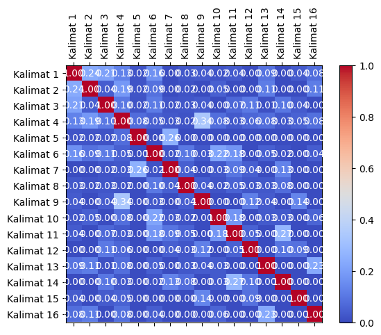
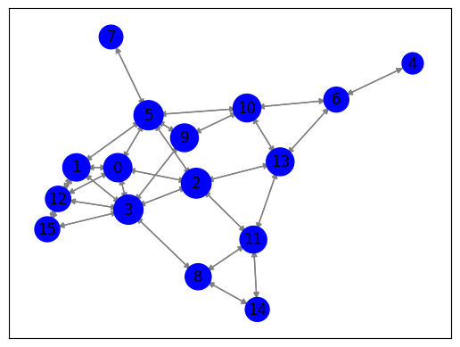

import requests
from bs4 import BeautifulSoup
import nltk
# Unduh konten halaman web berita
url = "https://www.antaranews.com/berita/3803331/kaesang-psi-tidak-ingin-ikut-campur-urusan-gibran-dengan-pdip"
response = requests.get(url)
html = response.text
# Parsing halaman web menggunakan BeautifulSoup
soup = BeautifulSoup(html, 'html.parser')
# Ekstraksi teks dari elemen-elemen yang berisi berita
article = soup.find('div' ,class_="post-content clearfix") # Sesuaikan dengan struktur HTML halaman web berita
article_text = article.get_text()
# Tokenisasi teks menjadi kalimat menggunakan nltk
nltk.download('punkt') # Pastikan Anda sudah mengunduh tokenisasi kalimat nltk
sentences = nltk.sent_tokenize(article_text)
# Cetak kalimat-kalimat
for sentence in sentences:
print(sentence)
Jakarta (ANTARA) - Ketua Partai Solidaritas Indonesia (PSI) Kaesang Pangarep mengatakan bahwa partainya tidak ingin ikut campur terkait urusan kakaknya yang sekaligus bakal calon wakil presiden dari Koalisi Indonesia Maju Gibran Rakabuming Raka di partainya.
Kaesang menanggapi pernyataan dari Ketua Bidang Kehormatan DPP PDIP Komarudin Watubun yang mengatakan bila partainya memecat Gibran Rakabuming Raka usai menjadi bacawapres dari Prabowo Subianto akan muncul narasi dizalimi.
"Ya balik lagi itu saya kembalikan lagi, itu urusan dapur partai lain, PSI tidak ikut campur tentang itu," kata Kaesang di Kantor DPP PSI, Jakarta Pusat, Rabu.
Namun, Kaesang siap menerima Gibran ke partainya bila Wali Kota Solo, Jawa Tengah, tersebut sudah tidak lagi menjadi kader PDIP.
"Oh iya terbuka sekali kan berkali-kali bilang kalau masuk ke sini sangat terbuka," ujar Kaesang.
Baca juga: Forum Komunikasi Santri Indonesia resmi gabung PSI
Baca juga: Ketum PSI kunjungi UMKM dan pengrajin sasando di Kupang
Pada Senin (30/10), Gibran sendiri mengaku sudah mendapatkan izin dari Ketua DPP PDIP Puan Maharani untuk ikut berkompetisi pada Pemilihan Presiden 2024.
"Teman-teman media kan saya sudah berkali-kali bilang.
Kira-kira dua minggu lalu saya sudah ketemu Mbak Puan dan Pak Arsjad (Ketua Tim Pemenangan Nasional Ganjar Pranowo di Pilpres 2024 Arsjad Rasjid, Red.
)," katanya di Solo, Jawa Tengah.
Pada pertemuan tersebut, ia mengaku sudah mendapatkan izin dari keduanya untuk mengikuti kontestasi pemilu tahun depan.
"Beliau berdua sudah memberi saya izin untuk ikut berkompetisi.
Nggak perlu saya ulang-ulang lagi," katanya.
Terkait keanggotaannya di PDIP yang dipermasalahkan sejumlah pihak, termasuk Ketua Dewan Pimpinan Cabang (DPC) PDIP Kota Surakarta FX Hadi Rudyatmo, dikatakannya, dalam waktu dekat ini ia akan bertemu dengan yang bersangkutan.
"Beliau sudah WA saya, nanti ya saya carikan jadwal.
Biar tidak saling tumpang tindih jadwalnya," katanya.
Termasuk mengenai permintaan dari sejumlah kader PDIP yang meminta Gibran mengembalikan kartu tanda anggota (KTA), ia akan membahasnya dengan FX Rudy.Pewarta: Hendri Sukma IndrawanEditor: Herry Soebanto COPYRIGHT © ANTARA 2023
[nltk_data] Downloading package punkt to /root/nltk_data...
[nltk_data] Package punkt is already up-to-date!
from sklearn.feature_extraction.text import TfidfVectorizer
# Inisialisasi penghitung TF-IDF
tfidf_vectorizer = TfidfVectorizer()
# Hitung TF-IDF
tfidf_matrix = tfidf_vectorizer.fit_transform(sentences)
# Daftar kata kunci
feature_names = tfidf_vectorizer.get_feature_names_out()
# Konversi matriks TF-IDF menjadi bentuk yang lebih mudah dibaca
tfidf_values = tfidf_matrix.toarray()
# Cetak TF-IDF untuk setiap kata dalam setiap kalimat
for i, sentence in enumerate(sentences):
print(f"Kalimat {i + 1}: {sentence}")
for j, word in enumerate(feature_names):
tfidf_value = tfidf_values[i][j]
if tfidf_value > 0:
print(f"{word}: {tfidf_value:.4f}")
print()
Kalimat 1:
Jakarta (ANTARA) - Ketua Partai Solidaritas Indonesia (PSI) Kaesang Pangarep mengatakan bahwa partainya tidak ingin ikut campur terkait urusan kakaknya yang sekaligus bakal calon wakil presiden dari Koalisi Indonesia Maju Gibran Rakabuming Raka di partainya.
antara: 0.1640
bahwa: 0.1883
bakal: 0.1883
calon: 0.1883
campur: 0.1640
dari: 0.1224
di: 0.1132
gibran: 0.1224
ikut: 0.1333
indonesia: 0.3279
ingin: 0.1883
jakarta: 0.1640
kaesang: 0.1224
kakaknya: 0.1883
ketua: 0.1224
koalisi: 0.1883
maju: 0.1883
mengatakan: 0.1640
pangarep: 0.1883
partai: 0.1640
partainya: 0.2934
presiden: 0.1640
psi: 0.1467
raka: 0.1640
rakabuming: 0.1640
sekaligus: 0.1883
solidaritas: 0.1883
terkait: 0.1640
tidak: 0.1333
urusan: 0.1640
wakil: 0.1883
yang: 0.1333
Kalimat 2: Kaesang menanggapi pernyataan dari Ketua Bidang Kehormatan DPP PDIP Komarudin Watubun yang mengatakan bila partainya memecat Gibran Rakabuming Raka usai menjadi bacawapres dari Prabowo Subianto akan muncul narasi dizalimi.
akan: 0.1608
bacawapres: 0.2063
bidang: 0.2063
bila: 0.1797
dari: 0.2682
dizalimi: 0.2063
dpp: 0.1608
gibran: 0.1341
kaesang: 0.1341
kehormatan: 0.2063
ketua: 0.1341
komarudin: 0.2063
memecat: 0.2063
menanggapi: 0.2063
mengatakan: 0.1797
menjadi: 0.1797
muncul: 0.2063
narasi: 0.2063
partainya: 0.1608
pdip: 0.1341
pernyataan: 0.2063
prabowo: 0.2063
raka: 0.1797
rakabuming: 0.1797
subianto: 0.2063
usai: 0.2063
watubun: 0.2063
yang: 0.1461
Kalimat 3: "Ya balik lagi itu saya kembalikan lagi, itu urusan dapur partai lain, PSI tidak ikut campur tentang itu," kata Kaesang di Kantor DPP PSI, Jakarta Pusat, Rabu.
balik: 0.1844
campur: 0.1606
dapur: 0.1844
di: 0.1108
dpp: 0.1437
ikut: 0.1306
itu: 0.5532
jakarta: 0.1606
kaesang: 0.1199
kantor: 0.1844
kata: 0.1844
kembalikan: 0.1844
lagi: 0.2874
lain: 0.1844
partai: 0.1606
psi: 0.2874
pusat: 0.1844
rabu: 0.1844
saya: 0.1108
tentang: 0.1844
tidak: 0.1306
urusan: 0.1606
ya: 0.1606
Kalimat 4: Namun, Kaesang siap menerima Gibran ke partainya bila Wali Kota Solo, Jawa Tengah, tersebut sudah tidak lagi menjadi kader PDIP.
bila: 0.2317
gibran: 0.1730
jawa: 0.2317
kader: 0.2317
kaesang: 0.1730
ke: 0.2317
kota: 0.2317
lagi: 0.2074
menerima: 0.2661
menjadi: 0.2317
namun: 0.2661
partainya: 0.2074
pdip: 0.1730
siap: 0.2661
solo: 0.2317
sudah: 0.1486
tengah: 0.2317
tersebut: 0.2317
tidak: 0.1885
wali: 0.2661
Kalimat 5: "Oh iya terbuka sekali kan berkali-kali bilang kalau masuk ke sini sangat terbuka," ujar Kaesang.
berkali: 0.2163
bilang: 0.2163
iya: 0.2483
kaesang: 0.1615
kalau: 0.2483
kali: 0.2163
kan: 0.2163
ke: 0.2163
masuk: 0.2483
oh: 0.2483
sangat: 0.2483
sekali: 0.2483
sini: 0.2483
terbuka: 0.4967
ujar: 0.2483
Kalimat 6: Baca juga: Forum Komunikasi Santri Indonesia resmi gabung PSI
Baca juga: Ketum PSI kunjungi UMKM dan pengrajin sasando di Kupang
Pada Senin (30/10), Gibran sendiri mengaku sudah mendapatkan izin dari Ketua DPP PDIP Puan Maharani untuk ikut berkompetisi pada Pemilihan Presiden 2024.
10: 0.1558
2024: 0.1356
30: 0.1558
baca: 0.3115
berkompetisi: 0.1356
dan: 0.1356
dari: 0.1013
di: 0.0936
dpp: 0.1214
forum: 0.1558
gabung: 0.1558
gibran: 0.1013
ikut: 0.1103
indonesia: 0.1356
izin: 0.1214
juga: 0.3115
ketua: 0.1013
ketum: 0.1558
komunikasi: 0.1558
kunjungi: 0.1558
kupang: 0.1558
maharani: 0.1558
mendapatkan: 0.1356
mengaku: 0.1356
pada: 0.2713
pdip: 0.1013
pemilihan: 0.1558
pengrajin: 0.1558
presiden: 0.1356
psi: 0.2428
puan: 0.1356
resmi: 0.1558
santri: 0.1558
sasando: 0.1558
sendiri: 0.1558
senin: 0.1558
sudah: 0.0870
umkm: 0.1558
untuk: 0.1214
Kalimat 7: "Teman-teman media kan saya sudah berkali-kali bilang.
berkali: 0.2951
bilang: 0.2951
kali: 0.2951
kan: 0.2951
media: 0.3389
saya: 0.2037
sudah: 0.1893
teman: 0.6778
Kalimat 8: Kira-kira dua minggu lalu saya sudah ketemu Mbak Puan dan Pak Arsjad (Ketua Tim Pemenangan Nasional Ganjar Pranowo di Pilpres 2024 Arsjad Rasjid, Red.
2024: 0.1717
arsjad: 0.3943
dan: 0.1717
di: 0.1185
dua: 0.1971
ganjar: 0.1971
ketemu: 0.1971
ketua: 0.1282
kira: 0.3943
lalu: 0.1971
mbak: 0.1971
minggu: 0.1971
nasional: 0.1971
pak: 0.1971
pemenangan: 0.1971
pilpres: 0.1971
pranowo: 0.1971
puan: 0.1717
rasjid: 0.1971
red: 0.1971
saya: 0.1185
sudah: 0.1101
tim: 0.1971
Kalimat 9: )," katanya di Solo, Jawa Tengah.
di: 0.3337
jawa: 0.4835
katanya: 0.4327
solo: 0.4835
tengah: 0.4835
Kalimat 10: Pada pertemuan tersebut, ia mengaku sudah mendapatkan izin dari keduanya untuk mengikuti kontestasi pemilu tahun depan.
dari: 0.1832
depan: 0.2818
ia: 0.2196
izin: 0.2196
keduanya: 0.2818
kontestasi: 0.2818
mendapatkan: 0.2454
mengaku: 0.2454
mengikuti: 0.2818
pada: 0.2454
pemilu: 0.2818
pertemuan: 0.2818
sudah: 0.1574
tahun: 0.2818
tersebut: 0.2454
untuk: 0.2196
Kalimat 11: "Beliau berdua sudah memberi saya izin untuk ikut berkompetisi.
beliau: 0.3583
berdua: 0.4115
berkompetisi: 0.3583
ikut: 0.2914
izin: 0.3207
memberi: 0.4115
saya: 0.2473
sudah: 0.2298
untuk: 0.3207
Kalimat 12: Nggak perlu saya ulang-ulang lagi," katanya.
katanya: 0.2831
lagi: 0.2831
nggak: 0.3633
perlu: 0.3633
saya: 0.2184
ulang: 0.7266
Kalimat 13: Terkait keanggotaannya di PDIP yang dipermasalahkan sejumlah pihak, termasuk Ketua Dewan Pimpinan Cabang (DPC) PDIP Kota Surakarta FX Hadi Rudyatmo, dikatakannya, dalam waktu dekat ini ia akan bertemu dengan yang bersangkutan.
akan: 0.1493
bersangkutan: 0.1916
bertemu: 0.1916
cabang: 0.1916
dalam: 0.1916
dekat: 0.1916
dengan: 0.1668
dewan: 0.1916
di: 0.1151
dikatakannya: 0.1916
dipermasalahkan: 0.1916
dpc: 0.1916
fx: 0.1668
hadi: 0.1916
ia: 0.1493
ini: 0.1916
keanggotaannya: 0.1916
ketua: 0.1246
kota: 0.1668
pdip: 0.2491
pihak: 0.1916
pimpinan: 0.1916
rudyatmo: 0.1916
sejumlah: 0.1668
surakarta: 0.1916
terkait: 0.1668
termasuk: 0.1668
waktu: 0.1916
yang: 0.2714
Kalimat 14: "Beliau sudah WA saya, nanti ya saya carikan jadwal.
beliau: 0.3229
carikan: 0.3708
jadwal: 0.3708
nanti: 0.3708
saya: 0.4457
sudah: 0.2071
wa: 0.3708
ya: 0.3229
Kalimat 15: Biar tidak saling tumpang tindih jadwalnya," katanya.
biar: 0.4046
jadwalnya: 0.4046
katanya: 0.3153
saling: 0.4046
tidak: 0.2865
tindih: 0.4046
tumpang: 0.4046
Kalimat 16: Termasuk mengenai permintaan dari sejumlah kader PDIP yang meminta Gibran mengembalikan kartu tanda anggota (KTA), ia akan membahasnya dengan FX Rudy.Pewarta: Hendri Sukma IndrawanEditor: Herry Soebanto COPYRIGHT © ANTARA 2023
2023: 0.1979
akan: 0.1542
anggota: 0.1979
antara: 0.1723
copyright: 0.1979
dari: 0.1287
dengan: 0.1723
fx: 0.1723
gibran: 0.1287
hendri: 0.1979
herry: 0.1979
ia: 0.1542
indrawaneditor: 0.1979
kader: 0.1723
kartu: 0.1979
kta: 0.1979
membahasnya: 0.1979
meminta: 0.1979
mengembalikan: 0.1979
mengenai: 0.1979
pdip: 0.1287
permintaan: 0.1979
pewarta: 0.1979
rudy: 0.1979
sejumlah: 0.1723
soebanto: 0.1979
sukma: 0.1979
tanda: 0.1979
termasuk: 0.1723
yang: 0.1401
from sklearn.metrics.pairwise import cosine_similarity
from sklearn.feature_extraction.text import TfidfVectorizer
# Indeks kalimat yang akan dibandingkan
sentence1_index = 0 # Ganti dengan indeks kalimat pertama yang ingin Anda bandingkan
sentence2_index = 1 # Ganti dengan indeks kalimat kedua yang ingin Anda bandingkan
# Ambil vektor TF-IDF untuk kedua kalimat
tfidf_vector1 = tfidf_matrix[sentence1_index]
tfidf_vector2 = tfidf_matrix[sentence2_index]
# Hitung cosine similarity antara kedua vektor
similarity = cosine_similarity(tfidf_vector1, tfidf_vector2)
# Cetak hasil cosine similarity
print(f"Cosine Similarity antara Kalimat {sentence1_index + 1} dan Kalimat {sentence2_index + 1}: {similarity[0][0]:.4f}")
Cosine Similarity antara Kalimat 1 dan Kalimat 2: 0.2371
# Matriks TF-IDF telah dihitung sebelumnya (tfidf_matrix)
# Hitung cosine similarity antara semua pasangan kalimat
similarity_matrix = cosine_similarity(tfidf_matrix, tfidf_matrix)
# Cetak hasil similarity_matrix
num_sentences = len(sentences) # Jumlah kalimat
for i in range(num_sentences):
for j in range(i+1, num_sentences):
similarity = similarity_matrix[i][j]
print(f"Cosine Similarity antara Kalimat {i + 1} dan Kalimat {j + 1}: {similarity:.4f}")
Cosine Similarity antara Kalimat 1 dan Kalimat 2: 0.2371
Cosine Similarity antara Kalimat 1 dan Kalimat 3: 0.2095
Cosine Similarity antara Kalimat 1 dan Kalimat 4: 0.1283
Cosine Similarity antara Kalimat 1 dan Kalimat 5: 0.0198
Cosine Similarity antara Kalimat 1 dan Kalimat 6: 0.1648
Cosine Similarity antara Kalimat 1 dan Kalimat 7: 0.0000
Cosine Similarity antara Kalimat 1 dan Kalimat 8: 0.0291
Cosine Similarity antara Kalimat 1 dan Kalimat 9: 0.0378
Cosine Similarity antara Kalimat 1 dan Kalimat 10: 0.0224
Cosine Similarity antara Kalimat 1 dan Kalimat 11: 0.0389
Cosine Similarity antara Kalimat 1 dan Kalimat 12: 0.0000
Cosine Similarity antara Kalimat 1 dan Kalimat 13: 0.0918
Cosine Similarity antara Kalimat 1 dan Kalimat 14: 0.0000
Cosine Similarity antara Kalimat 1 dan Kalimat 15: 0.0382
Cosine Similarity antara Kalimat 1 dan Kalimat 16: 0.0784
Cosine Similarity antara Kalimat 2 dan Kalimat 3: 0.0392
Cosine Similarity antara Kalimat 2 dan Kalimat 4: 0.1862
Cosine Similarity antara Kalimat 2 dan Kalimat 5: 0.0217
Cosine Similarity antara Kalimat 2 dan Kalimat 6: 0.0874
Cosine Similarity antara Kalimat 2 dan Kalimat 7: 0.0000
Cosine Similarity antara Kalimat 2 dan Kalimat 8: 0.0172
Cosine Similarity antara Kalimat 2 dan Kalimat 9: 0.0000
Cosine Similarity antara Kalimat 2 dan Kalimat 10: 0.0491
Cosine Similarity antara Kalimat 2 dan Kalimat 11: 0.0000
Cosine Similarity antara Kalimat 2 dan Kalimat 12: 0.0000
Cosine Similarity antara Kalimat 2 dan Kalimat 13: 0.1138
Cosine Similarity antara Kalimat 2 dan Kalimat 14: 0.0000
Cosine Similarity antara Kalimat 2 dan Kalimat 15: 0.0000
Cosine Similarity antara Kalimat 2 dan Kalimat 16: 0.1143
Cosine Similarity antara Kalimat 3 dan Kalimat 4: 0.1050
Cosine Similarity antara Kalimat 3 dan Kalimat 5: 0.0194
Cosine Similarity antara Kalimat 3 dan Kalimat 6: 0.1120
Cosine Similarity antara Kalimat 3 dan Kalimat 7: 0.0226
Cosine Similarity antara Kalimat 3 dan Kalimat 8: 0.0263
Cosine Similarity antara Kalimat 3 dan Kalimat 9: 0.0370
Cosine Similarity antara Kalimat 3 dan Kalimat 10: 0.0000
Cosine Similarity antara Kalimat 3 dan Kalimat 11: 0.0655
Cosine Similarity antara Kalimat 3 dan Kalimat 12: 0.1056
Cosine Similarity antara Kalimat 3 dan Kalimat 13: 0.0128
Cosine Similarity antara Kalimat 3 dan Kalimat 14: 0.1013
Cosine Similarity antara Kalimat 3 dan Kalimat 15: 0.0374
Cosine Similarity antara Kalimat 3 dan Kalimat 16: 0.0000
Cosine Similarity antara Kalimat 4 dan Kalimat 5: 0.0781
Cosine Similarity antara Kalimat 4 dan Kalimat 6: 0.0480
Cosine Similarity antara Kalimat 4 dan Kalimat 7: 0.0281
Cosine Similarity antara Kalimat 4 dan Kalimat 8: 0.0164
Cosine Similarity antara Kalimat 4 dan Kalimat 9: 0.3362
Cosine Similarity antara Kalimat 4 dan Kalimat 10: 0.0803
Cosine Similarity antara Kalimat 4 dan Kalimat 11: 0.0342
Cosine Similarity antara Kalimat 4 dan Kalimat 12: 0.0587
Cosine Similarity antara Kalimat 4 dan Kalimat 13: 0.0818
Cosine Similarity antara Kalimat 4 dan Kalimat 14: 0.0308
Cosine Similarity antara Kalimat 4 dan Kalimat 15: 0.0540
Cosine Similarity antara Kalimat 4 dan Kalimat 16: 0.0845
Cosine Similarity antara Kalimat 5 dan Kalimat 6: 0.0000
Cosine Similarity antara Kalimat 5 dan Kalimat 7: 0.2553
Cosine Similarity antara Kalimat 5 dan Kalimat 8: 0.0000
Cosine Similarity antara Kalimat 5 dan Kalimat 9: 0.0000
Cosine Similarity antara Kalimat 5 dan Kalimat 10: 0.0000
Cosine Similarity antara Kalimat 5 dan Kalimat 11: 0.0000
Cosine Similarity antara Kalimat 5 dan Kalimat 12: 0.0000
Cosine Similarity antara Kalimat 5 dan Kalimat 13: 0.0000
Cosine Similarity antara Kalimat 5 dan Kalimat 14: 0.0000
Cosine Similarity antara Kalimat 5 dan Kalimat 15: 0.0000
Cosine Similarity antara Kalimat 5 dan Kalimat 16: 0.0000
Cosine Similarity antara Kalimat 6 dan Kalimat 7: 0.0165
Cosine Similarity antara Kalimat 6 dan Kalimat 8: 0.1035
Cosine Similarity antara Kalimat 6 dan Kalimat 9: 0.0312
Cosine Similarity antara Kalimat 6 dan Kalimat 10: 0.2187
Cosine Similarity antara Kalimat 6 dan Kalimat 11: 0.1786
Cosine Similarity antara Kalimat 6 dan Kalimat 12: 0.0000
Cosine Similarity antara Kalimat 6 dan Kalimat 13: 0.0486
Cosine Similarity antara Kalimat 6 dan Kalimat 14: 0.0180
Cosine Similarity antara Kalimat 6 dan Kalimat 15: 0.0000
Cosine Similarity antara Kalimat 6 dan Kalimat 16: 0.0391
Cosine Similarity antara Kalimat 7 dan Kalimat 8: 0.0450
Cosine Similarity antara Kalimat 7 dan Kalimat 9: 0.0000
Cosine Similarity antara Kalimat 7 dan Kalimat 10: 0.0298
Cosine Similarity antara Kalimat 7 dan Kalimat 11: 0.0939
Cosine Similarity antara Kalimat 7 dan Kalimat 12: 0.0445
Cosine Similarity antara Kalimat 7 dan Kalimat 13: 0.0000
Cosine Similarity antara Kalimat 7 dan Kalimat 14: 0.1300
Cosine Similarity antara Kalimat 7 dan Kalimat 15: 0.0000
Cosine Similarity antara Kalimat 7 dan Kalimat 16: 0.0000
Cosine Similarity antara Kalimat 8 dan Kalimat 9: 0.0395
Cosine Similarity antara Kalimat 8 dan Kalimat 10: 0.0173
Cosine Similarity antara Kalimat 8 dan Kalimat 11: 0.0546
Cosine Similarity antara Kalimat 8 dan Kalimat 12: 0.0259
Cosine Similarity antara Kalimat 8 dan Kalimat 13: 0.0296
Cosine Similarity antara Kalimat 8 dan Kalimat 14: 0.0756
Cosine Similarity antara Kalimat 8 dan Kalimat 15: 0.0000
Cosine Similarity antara Kalimat 8 dan Kalimat 16: 0.0000
Cosine Similarity antara Kalimat 9 dan Kalimat 10: 0.0000
Cosine Similarity antara Kalimat 9 dan Kalimat 11: 0.0000
Cosine Similarity antara Kalimat 9 dan Kalimat 12: 0.1225
Cosine Similarity antara Kalimat 9 dan Kalimat 13: 0.0384
Cosine Similarity antara Kalimat 9 dan Kalimat 14: 0.0000
Cosine Similarity antara Kalimat 9 dan Kalimat 15: 0.1364
Cosine Similarity antara Kalimat 9 dan Kalimat 16: 0.0000
Cosine Similarity antara Kalimat 10 dan Kalimat 11: 0.1770
Cosine Similarity antara Kalimat 10 dan Kalimat 12: 0.0000
Cosine Similarity antara Kalimat 10 dan Kalimat 13: 0.0328
Cosine Similarity antara Kalimat 10 dan Kalimat 14: 0.0326
Cosine Similarity antara Kalimat 10 dan Kalimat 15: 0.0000
Cosine Similarity antara Kalimat 10 dan Kalimat 16: 0.0574
Cosine Similarity antara Kalimat 11 dan Kalimat 12: 0.0540
Cosine Similarity antara Kalimat 11 dan Kalimat 13: 0.0000
Cosine Similarity antara Kalimat 11 dan Kalimat 14: 0.2735
Cosine Similarity antara Kalimat 11 dan Kalimat 15: 0.0000
Cosine Similarity antara Kalimat 11 dan Kalimat 16: 0.0000
Cosine Similarity antara Kalimat 12 dan Kalimat 13: 0.0000
Cosine Similarity antara Kalimat 12 dan Kalimat 14: 0.0973
Cosine Similarity antara Kalimat 12 dan Kalimat 15: 0.0893
Cosine Similarity antara Kalimat 12 dan Kalimat 16: 0.0000
Cosine Similarity antara Kalimat 13 dan Kalimat 14: 0.0000
Cosine Similarity antara Kalimat 13 dan Kalimat 15: 0.0000
Cosine Similarity antara Kalimat 13 dan Kalimat 16: 0.2311
Cosine Similarity antara Kalimat 14 dan Kalimat 15: 0.0000
Cosine Similarity antara Kalimat 14 dan Kalimat 16: 0.0000
Cosine Similarity antara Kalimat 15 dan Kalimat 16: 0.0000
import pandas as pd
# Matriks TF-IDF telah dihitung sebelumnya (tfidf_matrix)
# Hitung cosine similarity antara semua pasangan kalimat
similarity_matrix = cosine_similarity(tfidf_matrix, tfidf_matrix)
# Nama kolom dan indeks untuk DataFrame
sentence_indices = [f"Kalimat {i + 1}" for i in range(len(sentences))]
# Buat DataFrame dari hasil cosine similarity
df = pd.DataFrame(similarity_matrix, columns=sentence_indices, index=sentence_indices)
# Cetak DataFrame
df
| Kalimat 1 | Kalimat 2 | Kalimat 3 | Kalimat 4 | Kalimat 5 | Kalimat 6 | Kalimat 7 | Kalimat 8 | Kalimat 9 | Kalimat 10 | Kalimat 11 | Kalimat 12 | Kalimat 13 | Kalimat 14 | Kalimat 15 | Kalimat 16 | |
|---|---|---|---|---|---|---|---|---|---|---|---|---|---|---|---|---|
| Kalimat 1 | 1.000000 | 0.237110 | 0.209541 | 0.128328 | 0.019762 | 0.164829 | 0.000000 | 0.029095 | 0.037764 | 0.022428 | 0.038855 | 0.000000 | 0.091813 | 0.000000 | 0.038205 | 0.078441 |
| Kalimat 2 | 0.237110 | 1.000000 | 0.039182 | 0.186217 | 0.021654 | 0.087422 | 0.000000 | 0.017189 | 0.000000 | 0.049149 | 0.000000 | 0.000000 | 0.113759 | 0.000000 | 0.000000 | 0.114290 |
| Kalimat 3 | 0.209541 | 0.039182 | 1.000000 | 0.104952 | 0.019357 | 0.111995 | 0.022577 | 0.026265 | 0.036989 | 0.000000 | 0.065470 | 0.105574 | 0.012763 | 0.101260 | 0.037421 | 0.000000 |
| Kalimat 4 | 0.128328 | 0.186217 | 0.104952 | 1.000000 | 0.078052 | 0.047968 | 0.028132 | 0.016364 | 0.336173 | 0.080273 | 0.034157 | 0.058709 | 0.081761 | 0.030778 | 0.053999 | 0.084456 |
| Kalimat 5 | 0.019762 | 0.021654 | 0.019357 | 0.078052 | 1.000000 | 0.000000 | 0.255319 | 0.000000 | 0.000000 | 0.000000 | 0.000000 | 0.000000 | 0.000000 | 0.000000 | 0.000000 | 0.000000 |
| Kalimat 6 | 0.164829 | 0.087422 | 0.111995 | 0.047968 | 0.000000 | 1.000000 | 0.016466 | 0.103513 | 0.031242 | 0.218735 | 0.178588 | 0.000000 | 0.048619 | 0.018016 | 0.000000 | 0.039086 |
| Kalimat 7 | 0.000000 | 0.000000 | 0.022577 | 0.028132 | 0.255319 | 0.016466 | 1.000000 | 0.044974 | 0.000000 | 0.029794 | 0.093876 | 0.044480 | 0.000000 | 0.129985 | 0.000000 | 0.000000 |
| Kalimat 8 | 0.029095 | 0.017189 | 0.026265 | 0.016364 | 0.000000 | 0.103513 | 0.044974 | 1.000000 | 0.039540 | 0.017331 | 0.054607 | 0.025873 | 0.029606 | 0.075611 | 0.000000 | 0.000000 |
| Kalimat 9 | 0.037764 | 0.000000 | 0.036989 | 0.336173 | 0.000000 | 0.031242 | 0.000000 | 0.039540 | 1.000000 | 0.000000 | 0.000000 | 0.122497 | 0.038427 | 0.000000 | 0.136414 | 0.000000 |
| Kalimat 10 | 0.022428 | 0.049149 | 0.000000 | 0.080273 | 0.000000 | 0.218735 | 0.029794 | 0.017331 | 0.000000 | 1.000000 | 0.177016 | 0.000000 | 0.032787 | 0.032597 | 0.000000 | 0.057441 |
| Kalimat 11 | 0.038855 | 0.000000 | 0.065470 | 0.034157 | 0.000000 | 0.178588 | 0.093876 | 0.054607 | 0.000000 | 0.177016 | 1.000000 | 0.054006 | 0.000000 | 0.273538 | 0.000000 | 0.000000 |
| Kalimat 12 | 0.000000 | 0.000000 | 0.105574 | 0.058709 | 0.000000 | 0.000000 | 0.044480 | 0.025873 | 0.122497 | 0.000000 | 0.054006 | 1.000000 | 0.000000 | 0.097329 | 0.089263 | 0.000000 |
| Kalimat 13 | 0.091813 | 0.113759 | 0.012763 | 0.081761 | 0.000000 | 0.048619 | 0.000000 | 0.029606 | 0.038427 | 0.032787 | 0.000000 | 0.000000 | 1.000000 | 0.000000 | 0.000000 | 0.231139 |
| Kalimat 14 | 0.000000 | 0.000000 | 0.101260 | 0.030778 | 0.000000 | 0.018016 | 0.129985 | 0.075611 | 0.000000 | 0.032597 | 0.273538 | 0.097329 | 0.000000 | 1.000000 | 0.000000 | 0.000000 |
| Kalimat 15 | 0.038205 | 0.000000 | 0.037421 | 0.053999 | 0.000000 | 0.000000 | 0.000000 | 0.000000 | 0.136414 | 0.000000 | 0.000000 | 0.089263 | 0.000000 | 0.000000 | 1.000000 | 0.000000 |
| Kalimat 16 | 0.078441 | 0.114290 | 0.000000 | 0.084456 | 0.000000 | 0.039086 | 0.000000 | 0.000000 | 0.000000 | 0.057441 | 0.000000 | 0.000000 | 0.231139 | 0.000000 | 0.000000 | 1.000000 |
import pandas as pd
import numpy as np
import matplotlib.pyplot as plt
# Matriks TF-IDF telah dihitung sebelumnya (tfidf_matrix)
# Hitung cosine similarity antara semua pasangan kalimat
similarity_matrix = cosine_similarity(tfidf_matrix, tfidf_matrix)
# Nama kolom dan indeks untuk DataFrame
sentence_indices = [f"Kalimat {i + 1}" for i in range(len(sentences))]
# Buat DataFrame dari hasil cosine similarity
df = pd.DataFrame(similarity_matrix, columns=sentence_indices, index=sentence_indices)
# Membuat grafik matriks
fig, ax = plt.subplots()
cax = ax.matshow(df, cmap='coolwarm')
fig.colorbar(cax)
# Memberi label pada sumbu X dan Y
ax.set_xticks(np.arange(len(df.columns)))
ax.set_yticks(np.arange(len(df.index)))
ax.set_xticklabels(df.columns, rotation=90)
ax.set_yticklabels(df.index)
# Menampilkan nilai similarity pada matriks
for i in range(len(df.index)):
for j in range(len(df.columns)):
text = ax.text(j, i, f'{df.iat[i, j]:.2f}', ha='center', va='center', color='w')
plt.show()

import networkx as nx
# Buat grafik dari matriks similarity
G = nx.Graph()
# Tambahkan simpul (node) ke grafik yang mewakili setiap kalimat
for sentence in sentences:
G.add_node(sentence)
# Tambahkan tepi (edge) antara kalimat berdasarkan similarity
for i in range(len(sentences)):
for j in range(i + 1, len(sentences)):
similarity = df.iloc[i, j] # Mengambil similarity dari DataFrame
if similarity > 0:
G.add_edge(sentences[i], sentences[j], weight=similarity)
# Hitung closeness centrality untuk setiap simpul
closeness_centrality = nx.closeness_centrality(G, distance='weight')
# Cetak closeness centrality
for sentence, centrality in closeness_centrality.items():
print(f"Closeness Centrality of {sentence}: {centrality:.4f}")
Closeness Centrality of
Jakarta (ANTARA) - Ketua Partai Solidaritas Indonesia (PSI) Kaesang Pangarep mengatakan bahwa partainya tidak ingin ikut campur terkait urusan kakaknya yang sekaligus bakal calon wakil presiden dari Koalisi Indonesia Maju Gibran Rakabuming Raka di partainya.: 22.2774
Closeness Centrality of Kaesang menanggapi pernyataan dari Ketua Bidang Kehormatan DPP PDIP Komarudin Watubun yang mengatakan bila partainya memecat Gibran Rakabuming Raka usai menjadi bacawapres dari Prabowo Subianto akan muncul narasi dizalimi.: 19.3663
Closeness Centrality of "Ya balik lagi itu saya kembalikan lagi, itu urusan dapur partai lain, PSI tidak ikut campur tentang itu," kata Kaesang di Kantor DPP PSI, Jakarta Pusat, Rabu.: 24.5204
Closeness Centrality of Namun, Kaesang siap menerima Gibran ke partainya bila Wali Kota Solo, Jawa Tengah, tersebut sudah tidak lagi menjadi kader PDIP.: 23.2067
Closeness Centrality of "Oh iya terbuka sekali kan berkali-kali bilang kalau masuk ke sini sangat terbuka," ujar Kaesang.: 20.3198
Closeness Centrality of Baca juga: Forum Komunikasi Santri Indonesia resmi gabung PSI
Baca juga: Ketum PSI kunjungi UMKM dan pengrajin sasando di Kupang
Pada Senin (30/10), Gibran sendiri mengaku sudah mendapatkan izin dari Ketua DPP PDIP Puan Maharani untuk ikut berkompetisi pada Pemilihan Presiden 2024.: 19.5901
Closeness Centrality of "Teman-teman media kan saya sudah berkali-kali bilang.: 23.5423
Closeness Centrality of Kira-kira dua minggu lalu saya sudah ketemu Mbak Puan dan Pak Arsjad (Ketua Tim Pemenangan Nasional Ganjar Pranowo di Pilpres 2024 Arsjad Rasjid, Red.: 25.7871
Closeness Centrality of )," katanya di Solo, Jawa Tengah.: 18.9024
Closeness Centrality of Pada pertemuan tersebut, ia mengaku sudah mendapatkan izin dari keduanya untuk mengikuti kontestasi pemilu tahun depan.: 24.4050
Closeness Centrality of "Beliau berdua sudah memberi saya izin untuk ikut berkompetisi.: 15.2160
Closeness Centrality of Nggak perlu saya ulang-ulang lagi," katanya.: 17.2644
Closeness Centrality of Terkait keanggotaannya di PDIP yang dipermasalahkan sejumlah pihak, termasuk Ketua Dewan Pimpinan Cabang (DPC) PDIP Kota Surakarta FX Hadi Rudyatmo, dikatakannya, dalam waktu dekat ini ia akan bertemu dengan yang bersangkutan.: 21.0884
Closeness Centrality of "Beliau sudah WA saya, nanti ya saya carikan jadwal.: 18.5486
Closeness Centrality of Biar tidak saling tumpang tindih jadwalnya," katanya.: 14.7779
Closeness Centrality of Termasuk mengenai permintaan dari sejumlah kader PDIP yang meminta Gibran mengembalikan kartu tanda anggota (KTA), ia akan membahasnya dengan FX Rudy.Pewarta: Hendri Sukma IndrawanEditor: Herry Soebanto COPYRIGHT © ANTARA 2023: 12.4526
import networkx as nx
# Matriks TF-IDF telah dihitung sebelumnya (tfidf_matrix)
# Hitung cosine similarity antara semua pasangan kalimat
similarity_matrix = cosine_similarity(tfidf_matrix, tfidf_matrix)
# Buat grafik berarah (DiGraph) berdasarkan similarity_matrix
G = nx.DiGraph()
for i in range(len(similarity_matrix)):
G.add_node(i) # Tambahkan node dengan indeks numerik
for i in range(len(similarity_matrix)):
for j in range(len(similarity_matrix)):
similarity = similarity_matrix[i][j]
if similarity > 0.08 and i != j: # Pastikan node tidak menghubungkan dirinya sendiri
G.add_edge(i, j)
# Hitung closeness centrality
closeness_centrality = nx.closeness_centrality(G)
# Visualisasi closeness centrality
pos = nx.spring_layout(G) # Atur layout grafik
node_size = [v * 1000 for v in closeness_centrality.values()] # Ubah ukuran node berdasarkan closeness centrality, dengan faktor pengurangan ukuran
nx.draw_networkx_nodes(G, pos, node_size=node_size, node_color='b')
nx.draw_networkx_edges(G, pos, edge_color='gray', arrows=True)
nx.draw_networkx_labels(G, pos)
plt.show()
# Cetak closeness centrality
print("Closeness Centrality:")
for node, closeness in closeness_centrality.items():
print(f"Node {node}: {closeness:.4f}")

Closeness Centrality:
Node 0: 0.5172
Node 1: 0.4839
Node 2: 0.5769
Node 3: 0.5556
Node 4: 0.2941
Node 5: 0.5556
Node 6: 0.4054
Node 7: 0.3659
Node 8: 0.4412
Node 9: 0.5000
Node 10: 0.5000
Node 11: 0.4688
Node 12: 0.4167
Node 13: 0.5000
Node 14: 0.3750
Node 15: 0.4054
# Cetak closeness centrality hanya untuk node yang memiliki closeness di atas treshold
threshold = 0.7
print("Closeness Centrality (di atas treshold):")
for node, closeness in closeness_centrality.items():
if closeness > threshold:
print(f"Node {node}: {closeness:.4f}")
Closeness Centrality (di atas treshold):